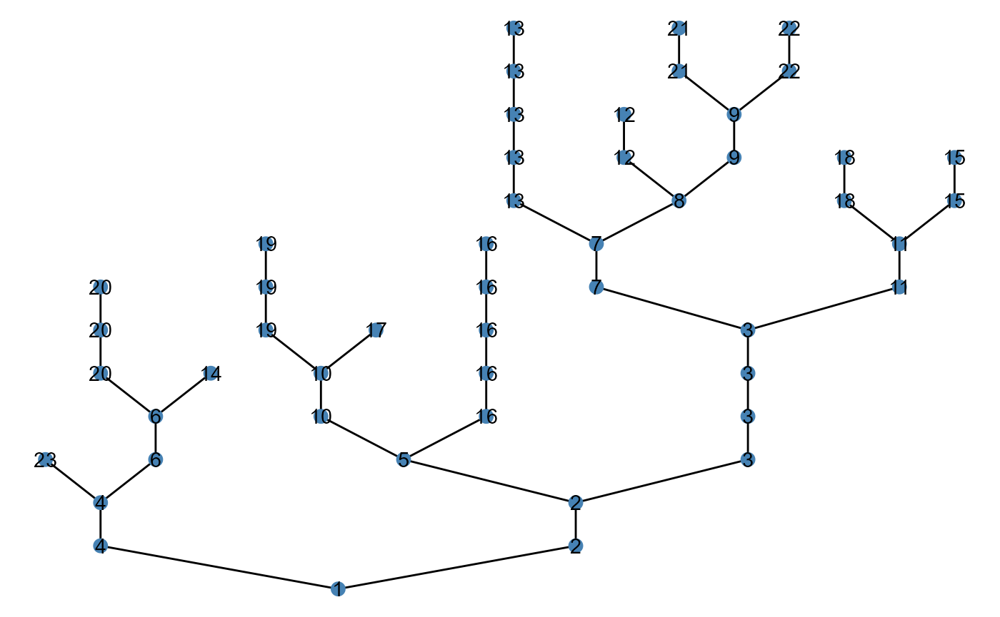

Basic usage
ggbrnet() is a wrapper of ggraph functions
for easy visualization of a network produced by brnet()
.
Quick start
ggbrnet() takes brnet() object as the first
argument, so it’s compatible with pipe %>%. By default,
it colors patches based on environmental values
df_patch$environment:

Patch color
Arguments: patch_color
Users can change how they color patches by specifying
patch_color. Default is env referring to the
environment column in patch_attr argument. Another option
is disturb referring to the disturbance column:

As a special case, the function accepts "other", which
allows users to specify any column in $df_patch. In this
case, it is required to specify the column in which data exist in
value_col with quotation:
df0 <- brnet()
df0$df_patch <- df0$df_patch %>%
mutate(x = runif(50, 0, 100))
df0 %>%
ggbrnet(patch_color = "other",
value_col = "x")If patch_color is neither env,
disturb, nor other, the function takes it as
an ordinary color name, for example:
Patch label
Arguments: patch_label
Users may add patch labels using the argument
patch_label:


Users may specify additional arguments passed to
ggraph::geom_node_label() to tweak details, for
example: